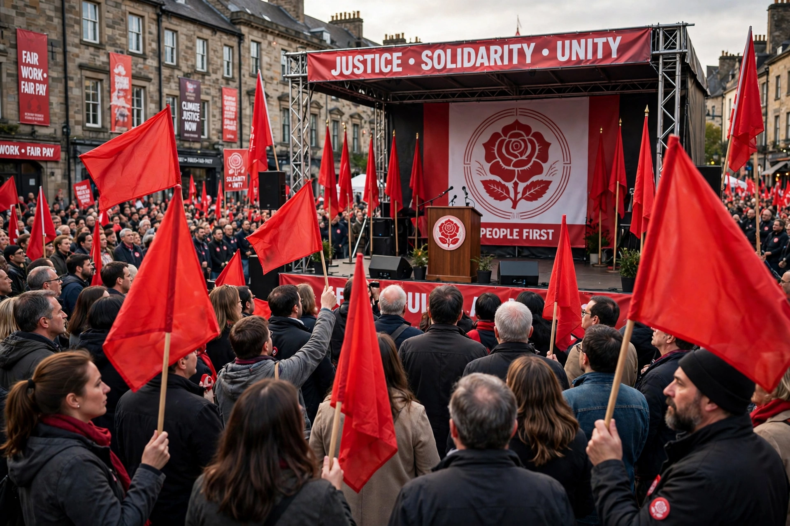

Spanish Socialist Workers' Party (PSOE)
| Partido Socialista Obrero Español | |
|---|---|
| Founded | 2 May 1879, Madrid |
| Founder | Pablo Iglesias Posse |
| Ideology | Social democracy |
| Political position | Centre-left |
| Headquarters | Calle de Ferraz 70, Madrid |
| International | Socialist International; Party of European Socialists |

The Spanish Socialist Workers' Party (Spanish: Partido Socialista Obrero Español, PSOE) is a social democratic political party in Spain. Founded in 1879 by Pablo Iglesias, it is one of the oldest parties in the country and, together with the conservative People's Party, one of the two dominant forces in Spanish politics since the transition to democracy.
History
The PSOE grew alongside its allied trade union, the UGT. It participated in the government of the Second Spanish Republic (1931–39) and was suppressed during the Franco dictatorship, operating in exile and clandestinity. After Franco's death, under Felipe González the party renounced Marxism in 1979, won a landslide in the 1982 general election, and governed until 1996, overseeing Spain's accession to the European Community and extensive modernisation.
The PSOE returned to power under José Luis Rodríguez Zapatero (2004–2011), introducing social reforms such as same-sex marriage, before losing office amid the eurozone crisis. Since 2018 it has governed under Pedro Sánchez, first alone and then in coalition, following a motion of no confidence against Mariano Rajoy.
Organisation
The party is structured as a federation of regional parties, notably the PSC in Catalonia. Its youth organisation is Juventudes Socialistas de España. The Secretary-General is elected by the membership and confirmed at federal congresses.
See also: Felipe González, Spanish transition to democracy, People's Party.